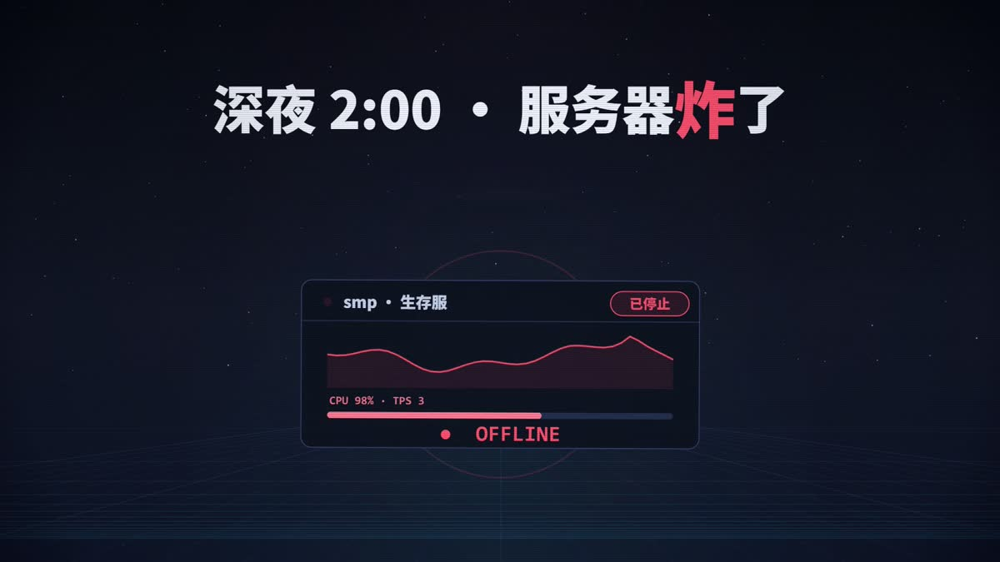
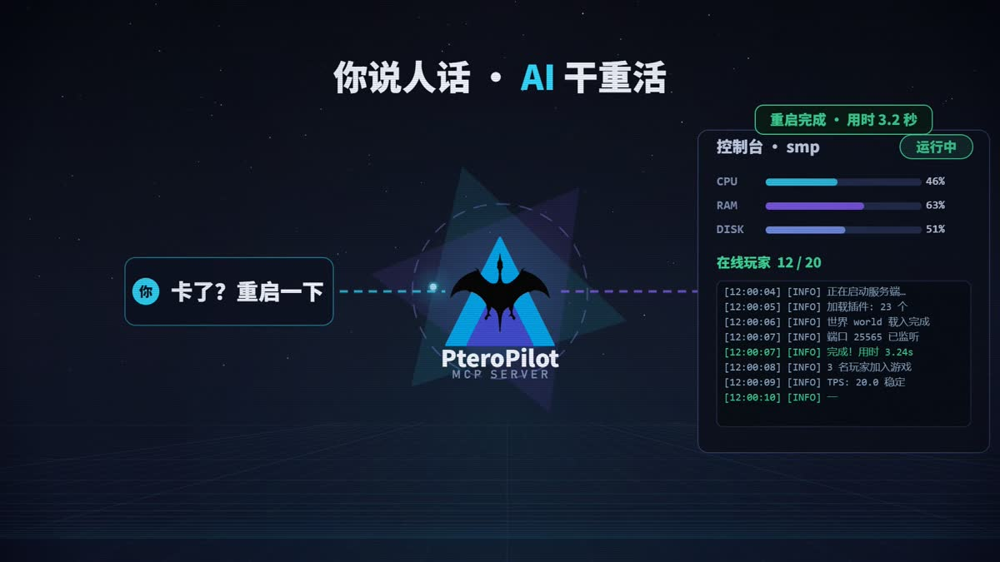
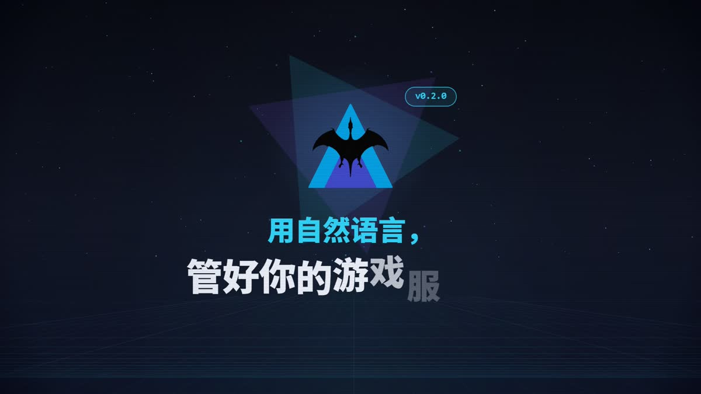

telson
telson
作品 · Work
做过的东西
三个项目，三种活法：一个能装进 AI 对话的开源工具，一条代码渲染出来的宣传片，一台不靠框架的网站。
02 · 视频管线
30 秒产品宣传片
整支片子由代码生成：1080P60、1800 帧、分镜与动效全部写成确定性函数， 配乐用纯代码合成（126 BPM，drop 精确落在第 10 秒），全程没有剪辑软件、没有素材库、没有版权风险。



03 · 本站
telson.dev
你正在看的这台网站。手写 HTML / CSS / JS，没有框架、没有构建步骤、没有外部字体和依赖，
一个 rsync 就能部署。
- 四个页面、一个 CSS 文件、一个 30 行的 JS
- 响应式布局，移动端可读
- 支持中英双语切换（Pteropilot 页）
- 首屏无外部请求，加载快
技术栈
自己写站点的好处：想改哪儿改哪儿，不用跟框架斗智斗勇。